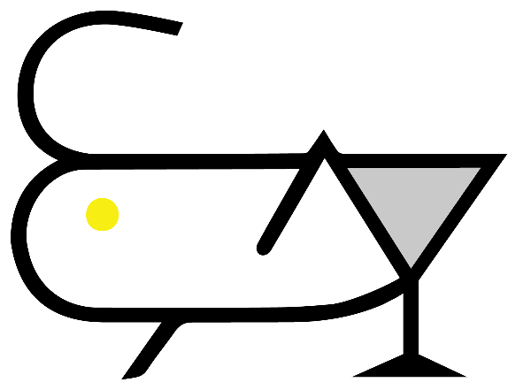
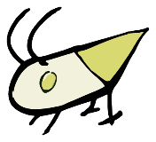

Scan to Join
SCAN · REGISTER · WAIT
Scan the QR code to join our waiting list
扫码加入等候名单
Name & phone → SMS when your table is ready → arrive within 10 min
WAITING LIST
WELCOME HOME, GUEST!파인앤코에 오신 것을 환영합니다
TODAY'S COCKTAIL오늘의 한 잔
—
CRICKET MENU

PINE&CO INSTAGRAM
@pineandco_seoul
CRICKET INSTAGRAM
@cricket.seoul

CONTACT 010 · 6817 · 0406